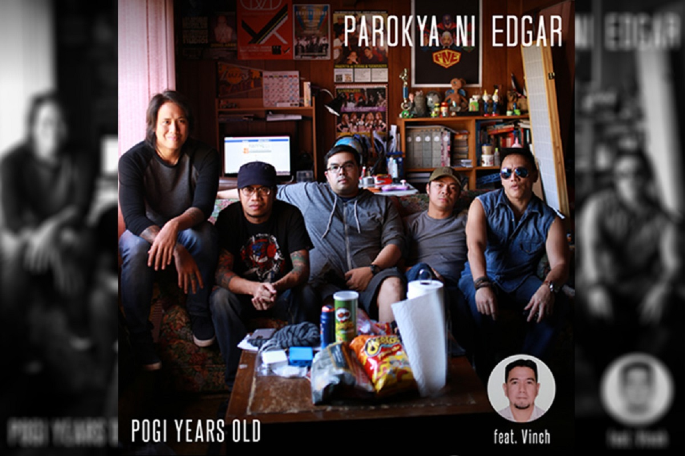

By: philstar.com | Updated October 12, 2016 - 12:25pm
MANILA, Philippines - One of the country’s longest-standing outfits from the ‘90s band explosion, is back in the music scene this month with an album of all-original material, titled “Pogi Years Old.”
The new record, released under Universal Records, is their ninth studio album and their first in six years.
The record is a mixture of comic relief, serious outtakes and love bites, all with a dash of kapilyuhan, something that the band has always been known for in their career that has spanned two decades.
The new album contains 21 tracks - fourteen in Filipino, two in English and five short pieces that serve as a “break” between tracks. Its carrier single is the ballad “Lagi Mong Tatandaan,” whose music video has just been premiered last October 4 via music channel MYX. The record also features collaborations with Rico Blanco, Gloc-9 and Frank Magalona.
All songs were written by the band themselves, except for “Ulan” by Coco Laurente, “Beautiful Girl” by Jose Mari Chan and “Panahon Na Naman ng Harana,” a medley which comprises of “Panahon Na Naman” by Rico Blanco and “Harana” by Eric Yaptangco, originally included in the band’s second studio album, 1997’s “Buruguduystunstugudunstuy.”
“Pogi Years Old” is released under Universal Records and will be available on CD in all record stores nationwide and on Spotify and other digital formats beginning October 17.